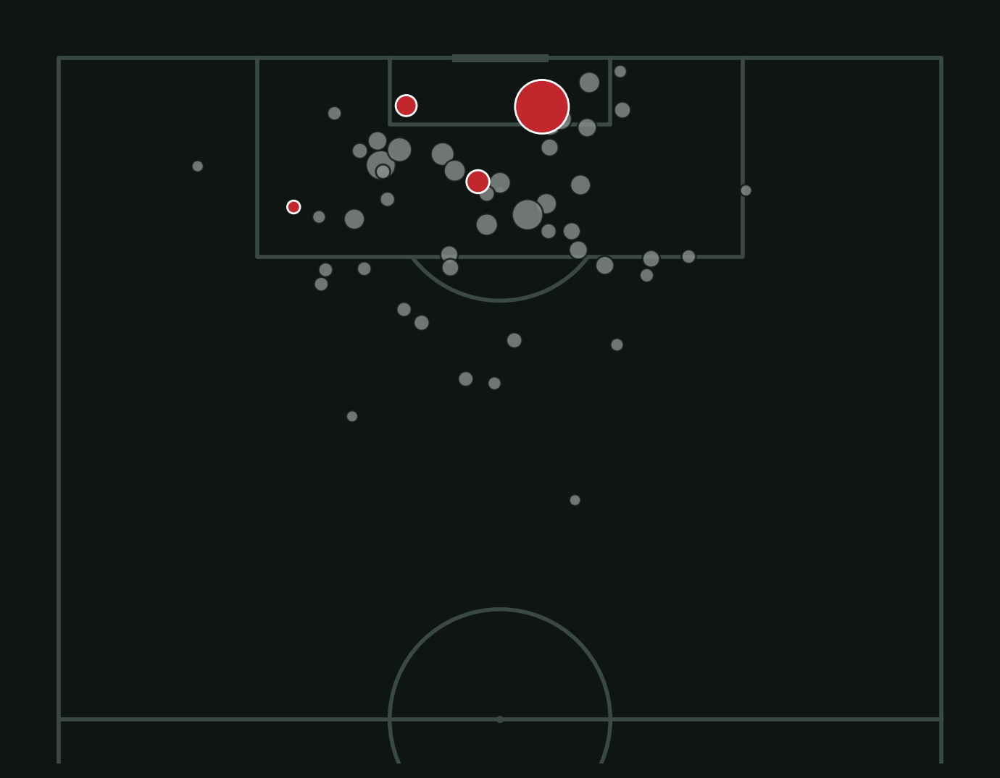

World Cup 2022 · Data story
Lions in the Data
How Morocco reached the 2022 World Cup semi-final, told through numbers.
–
Morocco's shots against Spain were worth – as much each as Spain's, measured in expected goals (xG).
The run
Seven matches, one semi-final
Finding 1
Fewer shots, better chances
Spain and Portugal out-shot Morocco. Switch to xG, which measures how likely each shot was to score, and the picture flips.
Finding 2
Defending the box
Every shot Morocco's four knockout opponents took. They often reached the box, but mostly for low-quality chances. Spain and Portugal took 24 shots combined and scored none.

No goal
Goal
Bigger dot = higher xG
Finding 3
Beating the odds
En-Nesyri scored 2 goals from 1.05 xG. Ziyech scored from 10 shots worth only 0.31 xG. As a team, Morocco scored – goals from – xG.
Method
How I built it
- Data: StatsBomb Open Data, free event data for every 2022 World Cup match.
- Analysis: Python (pandas, matplotlib, mplsoccer) in Google Colab.
- Website: HTML, CSS and Chart.js, hosted on GitHub Pages.
- I used AI tools to help write some of the code. I chose the questions, checked the results and wrote the findings.
Data notes
- Penalty shootout kicks are left out of shot and xG totals.
- StatsBomb credits the 72' goal against Belgium to Romain Saïss; official records credit Abdelhamid Sabiri. The team total of 6 goals matches official results.